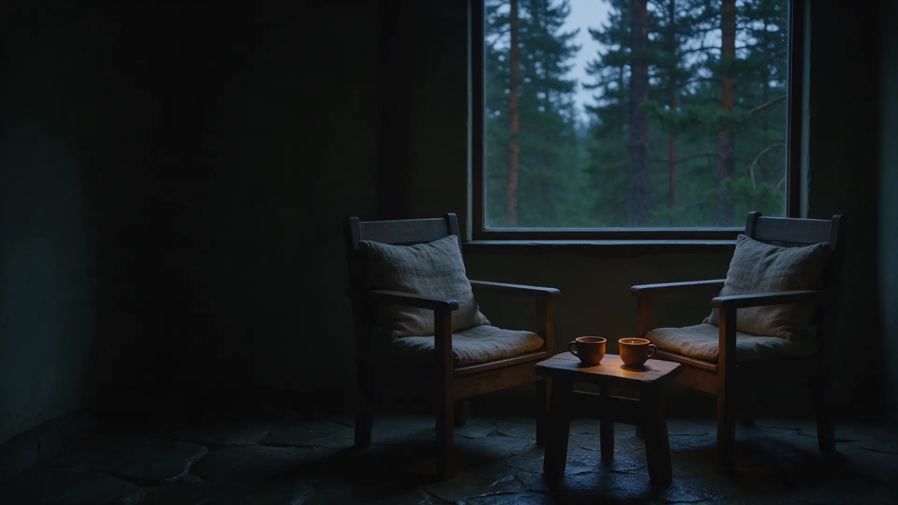

Мини-разбор
- один вопрос, который важен сейчас
- ответ по вашей карте, без воды
- понятно, нужен ли полный разбор
Разбираю карту по дате рождения: где ваш ресурс, деньги и власть, какой период наступает. На понятном языке и с конкретными шагами.
Онлайн из любого города и лично в Красноярске
Пример карты. Год, месяц, день и час рождения дают четыре столпа, и из них складывается схема: какие силы в вас сильны, каких не хватает и как они влияют друг на друга.
В центре карты – вы. Вокруг пять сил, и каждая отвечает за свою часть жизни. Сила не бывает плохой или хорошей: важно, в каком она балансе.
Что вас питает и восстанавливает: знания, поддержка, люди, на которых можно опереться.
Где брать силы, когда их нет, и почему они уходят
Ваши врождённые способности и то, как вы проявляетесь: идеи, речь, продукт, творчество.
В чём вы сильны от природы, а где тратите себя впустую
Ёмкость богатства и его источник: откуда приходят деньги и сколько вы способны удержать.
Подходит ли вам своё дело и какого масштаба
Статус, дисциплина, давление. Где вы управляете, а где вас пытаются подмять.
Как держать удар и не ломать себя под чужие правила
Равные вам: друзья, партнёры, конкуренты. Кто рядом усиливает, а кто забирает.
Где поджать, где добавить, чтобы силы работали вместе
Обычно не за предсказанием, а за ясностью: что со мной происходит и что с этим делать.

Отдельная работа для мужчин
Для тех, у кого конкуренты, обязательства и толпа вокруг. Здесь не нужно держать лицо: говорим на равных, без оценок и советов «как должен мужчина». Можно быть в тупике, сомневаться, злиться, и всё останется между нами.
Для предпринимателей
Я много лет веду свой бизнес и проверяла этот подход на себе, своих партнёрах и конкурентах. Результат разбора – решения, а не общие слова.
Разбор партнёров, команды и конкурентов
По дате рождения видно сильные стороны человека, его дефициты и зоны риска: где человек может не выдержать давления и откуда ждать проблем в совместном деле.
Выберите тему, с которой хотите начать. Если сомневаетесь, отметьте в заявке «помогите выбрать», и мы решим вместе.
От заявки до плана на руках. Никакой подготовки, кроме данных о рождении и вашего вопроса.
Оставляете заявку на сайте или пишете в Telegram. На заявку на мини-разбор отвечаю в течение суток, на консультацию – до трёх суток.
Уточняю дату, время и город рождения и то, что сейчас важно разобрать.
Онлайн по видеосвязи или лично в Красноярске. Объясняю карту простыми словами, отвечаю на вопросы.
После встречи у вас остаются запись консультации и PDF-разбор с выводами и конкретными шагами.
Обо мне
Всё, о чём я говорю на консультациях, я прожила сама. Бацзы пришло в мою жизнь через цигун, когда я восстанавливалась после тяжёлой болезни. Понимание собственной природы изменило мою жизнь, и теперь я помогаю другим найти свою опору.
Истинная сила – не борьба с миром и не натягивание чужих масок, а знание своей природы и опора на себя. Бацзы помогает понять, где эта опора и кто я
Я выросла рядом с волевым, статусным отцом-руководителем, прошла через сложный брак, развод, через онкологию и рецидив. Сейчас я в стойкой ремиссии. В бацзы я пришла через цигун во время реабилитации, и понимание собственной природы полностью изменило мою жизнь. Этот путь научил меня не осуждать и видеть в людях их настоящую суть. Я работаю онкомейтом: профессионально и бережно сопровождаю людей, прошедших онкологию, через самые тёмные этапы.
Нет. Карта не предсказывает события «по звёздам». Она показывает устройство: какие силы в вас сильны, каких не хватает и как это меняется по периодам. Дальше мы вместе решаем, что с этим делать.
Дата, время и город рождения. Если разбираем пару или партнёра по бизнесу, понадобятся те же данные второго человека.
Разбор возможен по трём столпам: году, месяцу и дню. Часть выводов будет менее точной, и я скажу, какая именно.
Онлайн по видеосвязи из любого города. Лично – в Красноярске.
Мини-разбор длится от 30 минут до часа. Длительность полной консультации зависит от запроса, её обсудим при записи. После консультации у вас остаются запись и PDF-разбор вашей карты.
Да. Ваши данные и то, что вы рассказываете, не передаются третьим лицам и не публикуются. Истории клиентов я показываю только анонимно и с их согласия.
Оставьте заявку, и я свяжусь с вами, чтобы уточнить данные и время. Заполнить дату рождения можно сейчас или позже.
Удобнее в мессенджере? Напишите в Telegram или WhatsApp. Познакомиться с подходом можно в моём канале «Бацзы аналитика».
Спасибо! По мини-разбору я свяжусь с вами в течение суток, по консультации – в течение трёх суток. Всё, что вы написали, останется между нами.
Написать в Telegram